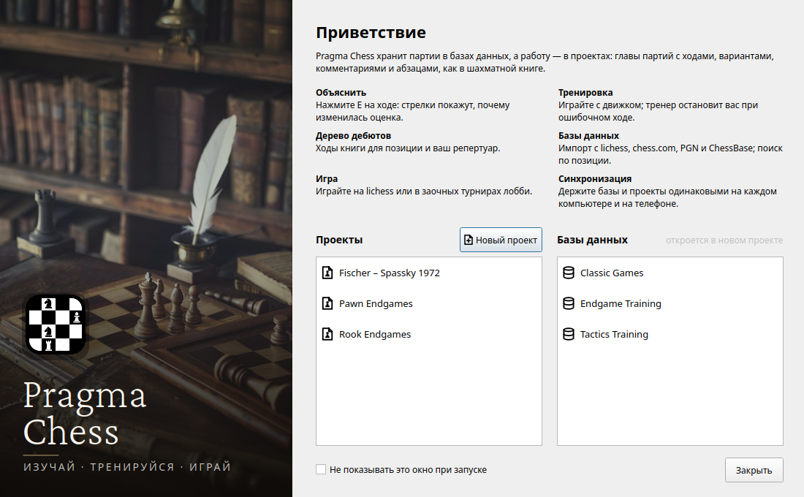

Tres idiomas nuevos en una semana
Pedimos ayuda para traducir Pragma Chess y en una semana habla español, ruso y chino simplificado. Gracias a quienes lo hicieron posible.

La noche del 10 de octubre abrimos una issue en GitHub con un título sencillo: Traduce Pragma Chess a tu idioma. Pragma Chess hablaba inglés e italiano. Esperábamos que alguien respondiera en unos meses. Una semana después habla cinco idiomas, y no esperábamos que ocurriera tan rápido.
El español, leído por un hablante nativo
La primera versión en español llegó al día siguiente de la issue, escrita por nosotros. Una traducción hecha por quien no habla el idioma a diario siempre tiene algo rígido, y Zeta (@zetachess) la leyó con el oído de quien la habla desde siempre y la hizo sonar natural: la licencia de Qt, los mensajes del libro de aperturas, el repertorio. Pequeños cambios, de los que solo nota quien habla la lengua.
El ruso, completo

mrvi0 (@mrvi0) escribió «me encargo del ruso» y pocos días después lo envió todo: cada texto de la interfaz, con las tres formas de plural que necesita el ruso (1 партия, 2 партии, 5 партий), la guía entera y este sitio web. Explicar, nuestra función principal, es «Объяснить», la misma palabra en todas partes.
El chino simplificado, y una buena pregunta
Wait-Again (@Wait-Again) empezó con una pregunta antes de escribir una sola línea: ¿el idioma debe llamarse zh_CN o zh? Con zh_CN también se traducirían los botones de Qt (Aceptar, Cancelar), pero quizá el programa no elegiría el chino por sí solo en un sistema chino. La duda era acertada: el programa comparaba solo el idioma, zh, con el nombre del archivo, zh_CN, y nunca lo encontraba. Ya está corregido: Pragma Chess busca primero la traducción del país y después una del mismo idioma con la misma escritura, así que un ordenador en China o Singapur recibe el chino simplificado, y uno en Taiwán, que escribe con caracteres tradicionales, no lo recibe por error. Luego llegó la traducción: más de 1600 textos, la interfaz entera, con 讲解 para Explicar.
Gracias
Traducir un programa es un trabajo largo y cuidadoso, hecho para personas a las que nunca conocerás: un jugador en Moscú, en Madrid o en Shanghái que abre Pragma Chess y lo encuentra en su idioma. A Zeta, mrvi0 y Wait-Again: gracias, de verdad.
Dos invitaciones, para ellos y para quien lee. Si formas parte de un club de ajedrez, háblale a tu club de Pragma Chess: es gratuito, de código abierto, y ahora habla un idioma más. Un club que apoya el proyecto aparece en los créditos del programa y de este sitio, con su logotipo; CLUBS.md explica cómo. Y si tu idioma todavía falta, la issue #4 está abierta.